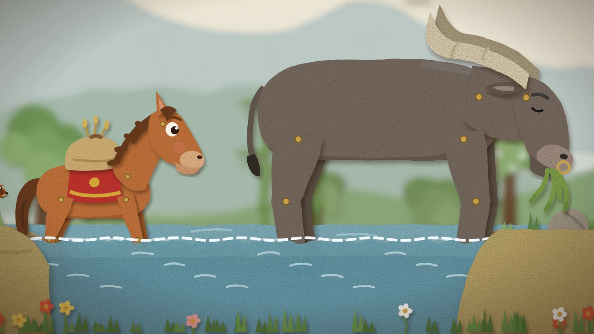

小马过河 — a Chinese folk tale for young children learning English. Uncle Ox says the river is shallow; Squirrel says it is deep. Little Horse has to find out for himself.
Paper puppets in a layered spring valley, all drawn in code. Twice the film stops so a child can touch the picture and hear the words.